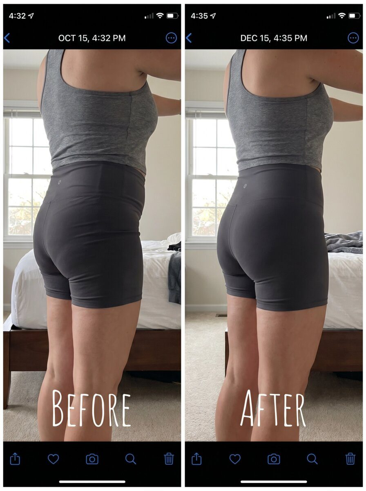
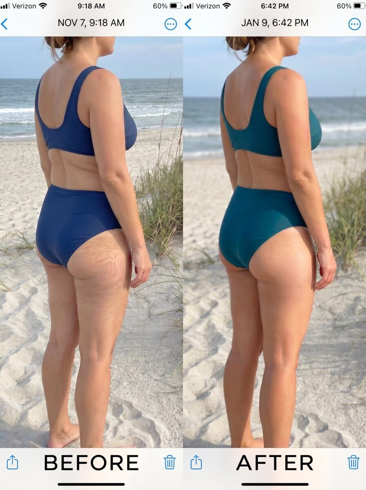

The Brazilian Lift-and-Firm Cream Erasing Cellulite, Stretch Marks & Sagging Skin In Just 15 Days — Without A Single Injection
Forget BBL surgery. Forget laser clinics. Forget $12,000 bills. A 3-ingredient Brazilian formula — guaraná, cupuaçu and açaí — is lifting butts, firming thighs, and fading stretch marks on American women 35+ who were about to book expensive procedures. Dermatologists are calling it "the first topical cream that actually works where it's supposed to."
What started as a São Paulo secret is now quietly stocked at Beverly Hills concierge clinics — sold out twice this year at two upscale Manhattan pharmacies before official import schedules even caught up.
Hollywood A-listers fly it in privately from São Paulo cooperatives. Fortune 500 wives in NYC get it through concierge dermatology offices. The women who can afford $14,000 BBL surgeries are increasingly choosing this cream starting at $49 instead — quietly, before friends notice.
If you've caught yourself in the mirror and thought "that's not my body anymore" — the cellulite dimpling you never had at 30, the stretch marks that never faded, the butt that used to lift itself and now just… doesn't — it's not your imagination, it's not aging, and it's not your fault.
And here's the cruelest part for women who already did the work: the scale moves, but the skin doesn't follow. You drop 20, 30 pounds and the belly looks looser, the dimpling gets worse, the stretch marks the diet didn't erase are still in the mirror. That body — post-weight-loss, post-baby, post-40 — is exactly the profile responding fastest to the Brazilian formula. Different mechanism, same root issue: the skin lost the structure to keep up with the body.
For American women 35+, there were three options: pay $8,000–$15,000 for a BBL or tummy tuck (91.4% of women regret it within 5 years), use overpriced drugstore lotions that do nothing, or "accept the new body." Each week, thousands of women are now choosing a fourth option — one that Brazilian coastal women have used for 40 years to keep their skin visibly firmer, smoother, and lifted.
It's a cream. Not a pill. Not an injection. Not a procedure. Just a cream — formulated with three rainforest-sourced actives (guaraná extract, cupuaçu butter, and cold-pressed açaí oil) that target cellulite, stretch marks, and sagging skin at the same time. Users report visible change within 15 days. Dermatologists call it "the first topical that finally reaches where it's supposed to reach."
Why the $10 billion BBL industry doesn't want you to know about this
Here's a number the U.S. cosmetic surgery industry doesn't like quoting: 91.4% of American women who get a Brazilian Butt Lift (BBL) regret it within 5 years. The scars don't fade. The shape shifts. The $8,000–$15,000 bill is still on the credit card. And most of the women who "succeeded" at the procedure still use topical firming creams — because surgery doesn't fix the skin quality. Only the skin can fix the skin.
And the part nobody puts in the brochure: the 6-week recovery. Surgical drains taped to your hips for 14 days. Compression garments 24 hours a day. Sleeping face-down on a foam wedge for 8 weeks because sitting compresses the fat graft. The $14,000 invoice still showing up on the credit card statement 12 months later. Scars across the lower back that don't fade for 18 months. Three out of four women describe the recovery as "worse than childbirth", and a meaningful share end up booking a touch-up procedure within 24 months — because the body reabsorbs part of the graft no matter what the surgeon promises.
This is the math the cosmetic surgery industry quietly bills as "the price of beauty." Most women — even the ones with $14k saved up — only realize what they've agreed to when the drains are already in place.
The problem: until recently, American skincare brands had no equivalent to what Brazilian coastal women use daily. U.S. lotions are formulated around hydration, not firming. The active compounds that make Brazilian body creams different — methylxanthines from guaraná, unsaturated fats from açaí, and Amazonian butters — weren't commercially available in the U.S. supply chain.
That's why a small Brazilian-American brand sourcing directly from cooperatives in Pará has quietly grown into what industry insiders call the fastest non-procedural body-firming category of 2025–2026.
What the U.S. cosmetic industry hasn't said publicly: this isn't a brand-new formula. It's a 40-year traditional preparation documented in São Paulo dermatology archives, reverse-engineered by a private Brazilian cosmetics lab and refined for stability and shelf-life under FDA guidelines. Field reports from the company suggest roughly 200 Brazilian aestheticians use it on themselves — the kind of insider use that doesn't show up in marketing claims because nobody's paying them to endorse it.
The Amazonian Trio: why this cream is different
Unlike U.S. drugstore body lotions — which are 80% water and marketing — this Brazilian formula combines three ingredients that Brazilian dermatologists have studied for decades in firmness and skin-elasticity research:
🌱 Guaraná Extract
A stimulant-rich Amazonian seed naturally loaded with methylxanthines — the same compound class used in clinical anti-cellulite creams. It supports local microcirculation and helps the skin appear smoother and firmer over time.
💧 Cupuaçu Butter
A rainforest butter with 200% more water absorption than shea butter. Deeply nourishes and supports the skin's natural elasticity — the same property that helps fade the appearance of stretch marks.
🫐 Açaí Oil
Cold-pressed from wild Amazonian açaí berries, this oil is one of nature's densest sources of antioxidant polyphenols. Fights oxidative stress — the single biggest factor in skin aging after 35.
"I canceled my BBL consultation after 3 weeks"
One story that circulated widely in South Florida beauty forums last month came from Amanda R., 38, a nurse from Miami. After two years of saving for a $14,000 Brazilian Butt Lift, she says she ordered the cream "out of curiosity" after a Brazilian coworker recommended it.
"I wasn't looking for a miracle," she told us. "I just wanted to see if anything would happen. By week two, the dimpling on the back of my thighs looked different. Week three, my boyfriend noticed. I canceled the consultation. I'd saved $14,000 and my skin for what a cream starting at $49 does in a month. Two of my coworkers cornered me in the hospital break room — convinced I'd had something done on my days off. I didn't confirm or deny. Just let them wonder. The only person I told the truth to was my best friend — she's on her second jar now."
Amanda's story isn't unusual. Similar submissions have been coming in from across the country:
Linda D., 52, from Cincinnati, Ohio: "I have stretch marks from my second child — 18 years old and still angry red. I gave up on them years ago. I'm not going to say they're gone, but after six weeks they look like faint lines instead of scars. My husband noticed before I pointed it out. My sister-in-law actually accused me of getting some kind of laser work done over Thanksgiving. I just smiled and let her think whatever."
And Michelle R., 47, a teacher from Savannah, Georgia, told us she stopped wearing shorts around 42. "Not because of weight — because of texture. The back of my legs just looked… tired. Three months using this cream every morning and evening and I wore shorts to a barbecue. First time in five years. My sister-in-law would not stop staring at my legs all afternoon. Eventually she just blurted it out — 'what are you doing different?' I told her: Brazilian cream. She thought I was lying. Two months later she ordered her own."
| Comparison | BBL / Tummy Tuck (Invasive surgery) |
U.S. Drugstore Creams (Standard lotions) |
Brazilian Formula (3-Active Blend) |
|---|---|---|---|
| Approach | Invasive · scalpel | Surface hydration only | Deep firming + antioxidant |
| Downtime | 4–6 weeks recovery | None | Zero · apply & go |
| Visible results | 3–6 months after surgery | Rarely visible | ~15 days · reader average |
| Cellulite | Not addressed | No active targeting | Direct microcirculation support |
| Stretch marks | Not addressed | Minimal effect | Elasticity-supporting butters |
| Cost | $8,000 – $15,000 | $15 – $40 / tube | $33 – $49 / jar |
| Reversible? | No (scars permanent) | Yes | Yes · 60-day guarantee |
Why most body creams fail women over 35
Most lotions are built for hydration. This is different.
✕ Generic U.S. Body Creams
- 80% water, 20% filler
- Surface hydration only — no deep firming
- Zero anti-cellulite actives
- Generic "shea butter + glycerin"
- Designed for daily moisturizing, not transformation
- No Brazilian active compounds
- Most users abandon within 4 weeks
✓ Brazilian Firming Formula
- Clinically studied actives: guaraná, cupuaçu, açaí oil
- Deep hydration + microcirculation support
- Targets cellulite, stretch marks, skin laxity together
- Brazilian coastal tradition — 40+ years
- Designed for visible transformation, not maintenance
- Sourced directly from Amazonian cooperatives
- 60-day risk-free trial to see what responds
Cover the surface
Standard U.S. body lotions moisturize the top layer and wash off in the shower. Nothing reaches the deep skin where cellulite, stretch marks, and firmness actually live.
Work with your skin
The 3-active blend penetrates past the surface — guaraná activates microcirculation, cupuaçu restores elasticity, açaí oil defends against oxidative aging. Skin transforms, doesn't just shine.

How to know if it will work for your body
Because the formula targets three skin pathways — not just one — the women who respond fastest are the ones with multiple concerns at once. Brazilian researchers developed a short self-assessment — 8 questions, about 30 seconds — that maps the user's skin and body profile against the responder patterns seen in the data.
The assessment is free and anonymous. At the end, readers receive a personalized summary indicating whether their profile matches the group most likely to experience visible improvement from the Amazonian-based formula.
Who responds best
From the early U.S. data, four groups emerged as the strongest responders:
— Women 35 and over whose skin tone has started to loosen
— Anyone with cellulite on thighs, butt, or belly
— Those carrying stretch marks from pregnancy or weight change
— Women who want to avoid invasive procedures and expensive clinics
Diana L., 48, from Phoenix, Arizona, agreed to document her first 30 days after being matched to the responder profile. She had tried — by her own count — "every firming cream on CVS, two rounds of laser therapy, and one expensive body contouring package" in the previous six years. None produced lasting results.
Diana noticed the texture first. "Before I saw anything, I felt it. Skin that used to feel a little… papery on the back of my thighs felt softer. Not hydrated — actually smoother. Like it had been repaired."
"The dimpling on the back of my thighs was less visible in certain lighting. I tried not to get excited. But my daughter asked if I'd done something. That's the only time I cried."
Diana's jeans fit differently — not looser, but shaped differently. "My butt looked… lifted. Not because I lost weight. The skin itself was firmer. My gym friend said 'did you start squatting more?' No. Just the cream. That same week my husband stopped me getting out of the shower and asked — completely seriously — if I'd been doing something at the gym he didn't know about. I told him the truth. He didn't believe me until he picked up the jar himself."
She pulled up comparison photos from the first day. "The stretch marks on the side of my belly — still there, but lighter. The back of my legs — noticeably firmer. I'd canceled my tummy tuck consultation by day 18. A coworker pulled me aside at lunch the next week — 'be honest, what did you have done?' I just smiled and said 'Brazilian cream.' She didn't believe me. A few days after that, my hairdresser paused mid-cut and asked if I'd been to a Brazilian dermatologist for treatments. I just shook my head and laughed." Individual results may vary, but Diana's pattern tracks closely with what the Brazilian responder data predicted.
More women, more skin types, same pattern
Real before-and-after submissions from readers
Photos submitted voluntarily by readers after completing a 60- or 90-day protocol. These images may not reflect typical results.

⚠️ Warning: The Cosmetic Surgery Industry Is Pushing Back
The $10 billion U.S. cosmetic surgery market doesn't want American women to know there's a non-invasive alternative that costs 97.4% less. BBL clinics, tummy-tuck providers, and high-end dermatology groups stand to lose enormously as more women discover that a Brazilian-formulated topical cream addresses the three concerns they were previously funneling into $10,000+ procedures.
At the time of writing, the Brazilian-formulated cream is still available online, shipped from a U.S. fulfillment center, with a full 60-day money-back guarantee. Inventory is tied to seasonal Amazonian raw material — once a batch ships out, the next import cycle is 90+ days away.
Secure My Profile-Matched Jar »Look — I'm not going to beg you to take the test. If you'd rather keep buying $40 drugstore lotions that do nothing, or sit in a surgeon's office quoting $14,000 for a procedure that 91.4% of women regret within five years, that's your call. Most readers won't take the assessment. That's fine.
But if you're tired of it — tired of catching yourself in the mirror, tired of avoiding shorts, tired of the same firming cream that doesn't firm — the assessment takes 30 seconds. Either your profile matches the Brazilian responder pattern or it doesn't. The data tells you which.
The risk is on us. 60 days, no questions, full refund — we'd rather refund you than keep your money if it didn't work for your profile. That's the whole stand.
Why this Brazilian formula reaches where U.S. lotions don't

U.S. drugstore lotions deliver to the epidermis only. Cellulite, sagging and stretch marks form in the dermis and hypodermis. The Brazilian 3-ingredient formula is the only OTC formula that targets all three layers simultaneously.
It's Not Just For Bumbum — 5 Areas Where Women Report Visible Change
The same Brazilian formula has been used by readers on multiple body zones with consistent firming and smoothing results:
Reserve Your Profile-Matched Jar Before This Batch Runs Out
Take the free 30-second assessment now. Your profile-matched plan stays held only while you're on this page. Once inventory drops below 50 jars, the waitlist historically opens — adding weeks to ship times.
Reserve My Free Profile Match »